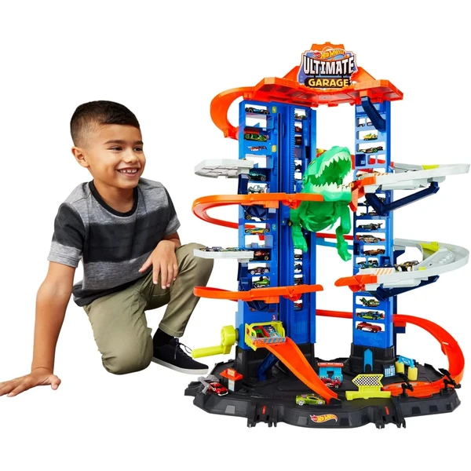
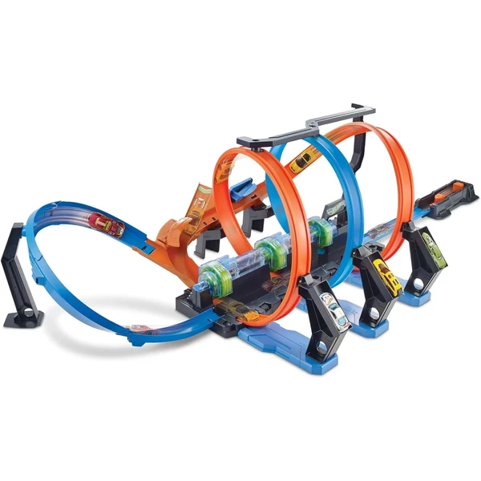
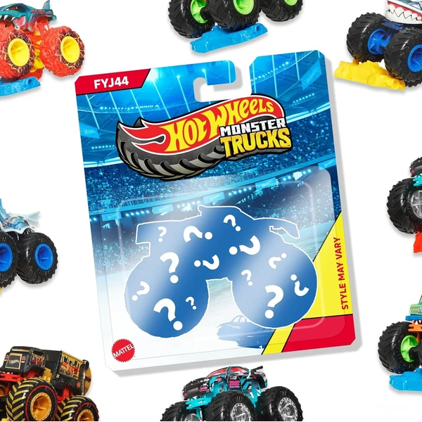
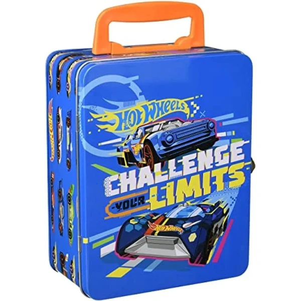
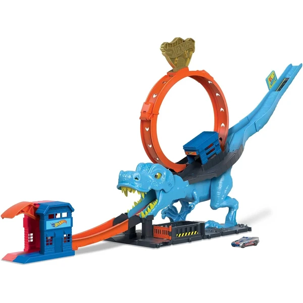

A los 5 años el interés por los coches se vuelve más específico: el niño reconoce marcas, modelos o personajes concretos y disfruta coleccionando y comparando sus vehículos. Los circuitos, garajes o packs temáticos alimentan partidas de juego más largas y elaboradas, a menudo compartidas con otros niños. En esta selección encontrarás coches pensados para esta edad.
¿Qué desarrollan los coches a los 5 años?
Coleccionar, comparar y organizar sus coches favoritos combina juego simbólico con las primeras clasificaciones.
- Juego simbólico
- Imaginación
- Clasificación
- Habilidades sociales
- Coordinación
- Creatividad

Hot Wheels Pack de 5 Coches
Un pack de 5 coches Hot Wheels a escala 1:64 con temáticas variadas, pensado tanto para empezar una colección como para intercambiar con amigos.
⭐ ¿Por qué nos gusta?
- ✔ 5 coches con temáticas distintas.
- ✔ Escala 1:64, detalles auténticos.
- ✔ Ideal para empezar o ampliar una colección.
💬 Lo que más destacan las familias
Muchos padres destacan que es un formato práctico para ir ampliando la colección poco a poco sin gastar mucho de golpe. La variedad de temáticas también engancha porque siempre hay un modelo nuevo que descubrir.
Ver en Amazon

Hot Wheels Ultimate Garage
Un garaje de varios niveles con capacidad para más de 100 coches, con una torre de lanzamiento para hacer carreras uno contra uno y un T-Rex robótico que intenta atrapar los coches.
⭐ ¿Por qué nos gusta?
- ✔ Almacena más de 100 coches.
- ✔ Torre de lanzamiento para carreras 1 contra 1.
- ✔ Incluye un T-Rex robótico interactivo.
💬 Lo que más destacan las familias
Se repite bastante el comentario de que da para horas de juego gracias a los distintos niveles y funciones. El T-Rex robótico también se valora porque añade un punto de emoción extra a las carreras.
Ver en Amazon

Hot Wheels City Camión Autopista
Un camión de transporte 3 en 1 que se despliega en una pista de más de 182 cm con lanzador doble, y guarda hasta 22 coches en sus compartimentos. Incluye 3 vehículos.
⭐ ¿Por qué nos gusta?
- ✔ Se transforma en pista de más de 182 cm.
- ✔ Almacena hasta 22 coches.
- ✔ Incluye 3 vehículos Hot Wheels.
💬 Lo que más destacan las familias
Muchos padres valoran que combine almacenaje y pista de carreras en un mismo juguete, aprovechando mejor el espacio. El lanzador doble también gusta porque permite competir entre dos coches a la vez.
Ver en Amazon

Hot Wheels Triple Looping
Una pista con tres loopings, tres zonas de choque y tres propulsores, pensada para lanzar los coches a toda velocidad sin que choquen entre ellos.
⭐ ¿Por qué nos gusta?
- ✔ Triple looping y tres zonas de choque.
- ✔ Tres propulsores para dar velocidad a los coches.
- ✔ Se conecta con otras pistas Hot Wheels.
💬 Lo que más destacan las familias
Lo que más suele gustar es el reto de superar los tres loopings sin que los coches choquen, algo que engancha bastante a los más competitivos. El tamaño de la pista también se valora porque da mucho espectáculo en poco espacio de montaje.
Ver en Amazon

Hot Wheels Monster Truck Surtido
Un monster truck Hot Wheels a escala 1:64 de la colección de todoterrenos, con ruedas grandes y una rueda coleccionable incluida en cada caja.
⭐ ¿Por qué nos gusta?
- ✔ Colección de 16 modelos distintos de monster truck.
- ✔ Incluye una rueda coleccionable en cada caja.
- ✔ Ficha con datos del vehículo en el envase.
💬 Lo que más destacan las familias
Entre los comentarios más habituales aparece lo mucho que engancha completar la colección de distintos monster trucks. La rueda coleccionable incluida también se valora como un detalle extra que no tienen otros packs.
Ver en Amazon

Theo Klein Maletín para 18 Coches
Un maletín de metal con separadores internos para guardar hasta 18 coches Hot Wheels a escala 1:64, con asa de transporte para llevarlo de un lado a otro.
⭐ ¿Por qué nos gusta?
- ✔ Guarda hasta 18 coches a escala 1:64.
- ✔ Asa de transporte, fácil de llevar.
- ✔ Estructura de metal resistente.
💬 Lo que más destacan las familias
Muchos padres destacan que mantiene la colección ordenada y fácil de transportar, algo útil para los que ya tienen muchos coches sueltos. El asa también se valora porque hace cómodo llevarlo de viaje.
Ver en Amazon

Hot Wheels Desafío del T-Rex
Una pista con un T-Rex gigante que hay que derribar antes de que atrape el coche, con un lanzador y un loop principal para ganar velocidad. Incluye un vehículo.
⭐ ¿Por qué nos gusta?
- ✔ T-Rex con ojos que cambian al derribarlo.
- ✔ Lanzador y loop principal incluidos.
- ✔ Incluye un coche Hot Wheels.
💬 Lo que más destacan las familias
Lo que más suele gustar es la reacción del T-Rex al ser derribado, con sus ojos cambiando de expresión. El reto de superar el loop a tiempo también engancha bastante a los peques.
Ver en Amazon

Hot Wheels Track Builder Lata de Gasolina
Una caja de pistas con forma de bidón que se transforma en parte del circuito, con piezas compatibles con otros sets de Hot Wheels. Incluye un vehículo para empezar a jugar.
⭐ ¿Por qué nos gusta?
- ✔ El envase se transforma en parte de la pista.
- ✔ Compatible con otros sets Hot Wheels.
- ✔ Incluye un vehículo Hot Wheels.
💬 Lo que más destacan las familias
Se repite bastante el comentario de que aprovechar la propia caja como parte del circuito es un acierto, sin piezas sueltas que sobren. La compatibilidad con otras pistas también gusta porque permite ir ampliando el montaje.
Ver en Amazon

Hot Wheels Color Shifters
Un coche Hot Wheels que cambia de color al mojarlo con agua templada y recupera su tono original con agua fría, un efecto sorpresa que se puede repetir muchas veces.
⭐ ¿Por qué nos gusta?
- ✔ Cambia de color con agua templada.
- ✔ Recupera el color original con agua fría.
- ✔ Efecto repetible tantas veces como se quiera.
💬 Lo que más destacan las familias
Muchos padres destacan que el cambio de color sorprende mucho la primera vez que lo prueban. Repetir el efecto una y otra vez es lo que más entretiene durante el baño o el juego con agua.
Ver en Amazon

Hot Wheels Garaje Extremo
Un garaje vertical con ascensor para subir los coches a distintos niveles, con zona de revisión y repostaje incluida para completar la aventura antes de salir a pista.
⭐ ¿Por qué nos gusta?
- ✔ Ascensor para mover los coches entre niveles.
- ✔ Zona de revisión y repostaje incluida.
- ✔ Se conecta con otros sets de Hot Wheels City.
💬 Lo que más destacan las familias
Lo que más suele gustar es lo entretenido que resulta subir y bajar los coches por el ascensor entre los distintos niveles. La zona de repostaje también da pie a inventar historias antes de salir a correr.
Ver en Amazon

Hot Wheels Coche Básico Individual
Un coche Hot Wheels individual a escala 1:64, con acabados detallados y distintos diseños disponibles, pensado para ampliar la colección poco a poco.
⭐ ¿Por qué nos gusta?
- ✔ Escala 1:64 con acabados detallados.
- ✔ Gran variedad de modelos disponibles.
- ✔ Formato individual, ideal para completar la colección.
💬 Lo que más destacan las familias
Muchos padres valoran que sea una forma económica de ir ampliando la colección sin comprar packs grandes de golpe. La variedad de modelos también engancha porque siempre hay uno nuevo que añadir.
Ver en Amazon

Hot Wheels Pack 10 Coches de Carreras
Un pack de 10 coches de carreras a escala 1:64 con licencia oficial de marcas como Porsche, Bugatti o Koenigsegg, pensado para ampliar una colección con modelos de gama alta.
⭐ ¿Por qué nos gusta?
- ✔ 10 coches con licencia oficial de marcas reales.
- ✔ Escala 1:64, detalles auténticos.
- ✔ Modelos variados en cada pack.
💬 Lo que más destacan las familias
Entre los comentarios más habituales aparece lo detallados que son los diseños comparado con otros packs básicos. Tener marcas reconocibles como Porsche o Bugatti también suma puntos entre los más fans de los coches.
Ver en Amazon

Hot Wheels City Parking Downtown
Un parking de 4 niveles con ascensor manual, cargador de coches eléctricos y rampa de salida, pensado para guardar y hacer salir los coches con estilo. Incluye un vehículo.
⭐ ¿Por qué nos gusta?
- ✔ 4 niveles de aparcamiento.
- ✔ Ascensor manual y rampa de salida.
- ✔ Incluye un coche Hot Wheels.
💬 Lo que más destacan las familias
Muchos padres destacan que el ascensor manual es de lo que más engancha, ya que los peques disfrutan subiendo los coches uno a uno. La rampa de salida también se valora porque añade emoción al momento de sacar el coche a jugar.
Ver en Amazon